| 選択肢 | 解説 |
|---|---|
| ａ 音叉検査 | 自覚的検査。Rinne試験・Weber試験とも「どちらが大きく聞こえますか」という被検者の申告で成り立つ。簡便でベッドサイドの伝音／感音の切り分けには有用だが、乳幼児や協力の得られない患者では施行できない。 |
| ◯ ｂ 耳音響放射〈OAE〉 | ◯ 他覚的検査。蝸牛の外有毛細胞が能動的に伸縮したときに逆行性に外耳道へ放射される微小音をマイクで拾う。被検者は音を聞いて何かを答える必要がまったくないので新生児聴覚スクリーニングに用いられる。 |
| ｃ 語音聴力検査 | 自覚的検査。単音節語表を聞かせて被検者に復唱・書き取りをさせ、正答率（語音明瞭度）を求める。補聴器・人工内耳の効果判定や後迷路性難聴の評価に必須だが、応答が前提である。 |
| ｄ 純音聴力検査 | 自覚的検査の代表。「音が聞こえたらボタンを押す」という応答で閾値を決めるため、詐聴・心因性難聴では実際より悪い値が出る。 |
| ◯ ｅ 聴性脳幹反応〈ABR〉 | ◯ 他覚的検査。クリック音の刺激後10ms以内に頭皮上へ現れる脳幹由来の誘発電位を加算平均して記録する。睡眠中・鎮静下でも記録でき、閾値推定と後迷路病変の検出の両方に使える。 |
| OAE | ABR | |
|---|---|---|
| 測るもの | 外有毛細胞が放射する微小音 | 脳幹までの誘発電位 |
| 評価範囲 | 蝸牛（外有毛細胞）まで | 蝸牛神経〜脳幹まで |
| 所要時間 | 数十秒と短い | 数十分（加算平均が要る） |
| 弱点 | 中耳に貯留液があると出ない／後迷路病変を見逃す | 鎮静が要ることがある |
| 選択肢 | 解説 |
|---|---|
| ａ Ménière病 ―――― 難 聴 | 正しい組合せ。Ménière病は内リンパ水腫による疾患で、回転性めまい発作・変動する難聴（低音障害型）・耳鳴・耳閉感の4徴が反復する。「難聴を伴わないめまい」はMénière病とは呼ばないのが定義上の要点である。 |
| ｂ 小脳梗塞 ――――― 運動失調 | 正しい組合せ。小脳は運動の協調を司るので、体幹・四肢の失調、測定障害、企図振戦、断綴性言語が出る。めまいに「立てない・歩けない」ほどの失調が伴えば中枢性を強く疑う。 |
| ｃ 聴神経腫瘍 ―――― 聴力低下 | 正しい組合せ。聴神経腫瘍（前庭神経鞘腫）は内耳道内で蝸牛神経を圧迫し、緩徐進行性の一側性感音難聴と耳鳴をきたす。腫瘍の由来は前庭神経だが、前庭は緩徐な障害を中枢が代償するため、主訴は難聴のほうが多い。 |
| ◯ ｄ 脳幹出血 ――――― 視力低下 | ◯ これが誤り。視覚路（網膜→視神経→視交叉→視索→外側膝状体→視放線→後頭葉）は脳幹（中脳・橋・延髄）を通らないので、脳幹出血で「視力低下」は生じない。脳幹出血で出るのは複視・眼球運動障害・縮瞳・構音障害・嚥下障害・交代性片麻痺・意識障害である。 |
| ｅ パニック症 ―――― 動 悸 | 正しい組合せ。パニック発作は動悸・発汗・振戦・呼吸困難・胸痛・めまい・現実感消失・死の恐怖が数分でピークに達する。「浮動性めまい」の重要な鑑別である。 |
| 脳幹にある | 脳幹にない | |
|---|---|---|
| 構造 | Ⅲ〜Ⅻ脳神経核・錐体路・内側毛帯・脊髄視床路・前庭神経核・網様体賦活系・眼球運動系（MLF・PPRF） | 視覚路（視索より後方）・大脳皮質の高次機能 |
| 出る症状 | 複視・眼球運動障害・構音障害・嚥下障害・顔面神経麻痺・交代性片麻痺・意識障害・呼吸循環の異常 | 視力低下・視野欠損（同名半盲）・失語 |
| 年齢 | 検査 | 種別 |
|---|---|---|
| 新生児〜6か月 | 自動ABR・OAE（スクリーニング）／ABR・ASSR（精密） | 他覚的 |
| 6か月〜2歳半 | 聴性行動反応聴力検査〈BOA〉／条件詮索反応聴力検査〈COR〉 | 自覚的（行動観察） |
| 3歳〜5歳 | 遊戯聴力検査（音が聞こえたら積木を入れる等） | 自覚的 |
| 5〜6歳以上 | 純音聴力検査（成人と同じ） | 自覚的 |
| 選択肢 | 解説 |
|---|---|
| ａ 語音聴力検査 | 単音節語表を復唱・書き取りさせる自覚的検査で、語彙と読み書きが確立していない3歳児では成立しない。補聴器・人工内耳の効果判定や後迷路性難聴の評価に使う検査であり、難聴の一次精査としての位置づけでもない。 |
| ｂ 自記オージオメトリ | 被検者自身がボタンを押し続け／離して閾値を連続記録する自覚的検査。Békésy型の連続音・断続音の描き方から補充現象や機能性難聴を推定する成人向けの検査で、3歳児に自己記録を求めるのは不可能である。 |
| ｃ 純音聴力検査 | 「聞こえたらボタンを押す」という約束が守れる年齢（おおむね5〜6歳以上）で成立する。3歳では集中が続かず閾値が不正確になるため、この年齢では遊戯聴力検査に置き換えるのが定石である（本章 NO.20 を参照）。 |
| ◯ ｄ 聴性脳幹反応〈ABR〉 | ◯ 他覚的検査であり、年齢・協力度に左右されずに閾値を客観的に推定できる。必要なら鎮静下でも記録でき、同時に後迷路（蝸牛神経〜脳幹）の異常も検出できる。選択肢の中で3歳児に確実に施行でき、かつ難聴の程度を確定できるのはこれだけである。 |
| ｅ ティンパノメトリ | 外耳道の圧を変えながら鼓膜の動きやすさ（コンプライアンス）を測る他覚的検査。中耳の状態（滲出性中耳炎＝B型、耳管狭窄＝C型）は分かるが、「何dBまで聞こえるか」という閾値はまったく分からない。スクリーニングの補助にはなるが精密検査の主役にはならない。 |
| 本問 119D-7 | NO.20 106E-42 | |
|---|---|---|
| 選択肢に遊戯聴力検査 | 無い | ある |
| 他に成立する検査 | 語音・自記・純音はいずれも3歳では不能、ティンパノメトリは閾値が出ない | 同上 |
| 正解 | ABR | 遊戯聴力検査 |
| 選択肢 | 解説 |
|---|---|
| ◯ ａ 外側半規管 | ◯ カロリックテストが評価しているのは外側（水平）半規管だけである。外耳道は外側半規管に最も近く、頭部を30度挙上すると外側半規管が鉛直面に立つため、温度差でつくった内リンパの対流がクプラを最も効率よく偏位させる。 |
| ｂ 外有毛細胞 | 外有毛細胞は蝸牛のCorti器にあり、音の増幅（蝸牛増幅器）を担う聴覚の細胞で、平衡覚とは無関係である。外有毛細胞の機能を見る検査は耳音響放射〈OAE〉（本章 NO.1）。 |
| ｃ 球形囊 | 球形囊〈saccule〉は耳石器で、垂直方向の直線加速度と重力を感じる。温度による内リンパの対流では刺激されない。評価するにはcVEMP（頸性前庭誘発筋電位。強大音→球形囊→下前庭神経→胸鎖乳突筋の筋電位抑制）を用いる。 |
| ｄ 後半規管 | 後半規管は外耳道から遠く、温度の対流刺激が届きにくい。後半規管の評価はvHIT（video head impulse test）で行う。なおBPPVで耳石が迷入する頻度が最も高いのはこの後半規管で、Dix-Hallpike法で誘発しEpley法で治療する。 |
| ｅ 卵形囊 | 卵形囊〈utricle〉も耳石器で、水平方向の直線加速度を感じる。評価はoVEMP（眼性前庭誘発筋電位。卵形囊→上前庭神経→外眼筋）である。 |
| 検査 | 評価する受容器 | 特徴 |
|---|---|---|
| カロリック（温度眼振） | 外側半規管（片側ずつ） | 超低周波。左右差＝半規管麻痺CPが出せる唯一の簡便法 |
| 回転検査 | 両側の外側半規管 | 中周波。左右を分離できない |
| vHIT（head impulse） | 6本すべての半規管 | 高周波。ベッドサイドで数分。中枢性めまいの除外に有用 |
| cVEMP | 球形囊・下前庭神経 | 強大音刺激→胸鎖乳突筋の筋電位抑制 |
| oVEMP | 卵形囊・上前庭神経 | 下眼瞼下の外眼筋から記録 |
| 重心動揺検査 | 平衡機能の総和 | 開眼／閉眼比（Romberg率）で末梢性を推定 |
| 選択肢 | 解説 |
|---|---|
| ａ 「機能性難聴です」 | 機能性難聴（心因性難聴・詐聴）は「自覚的検査では難聴だが他覚的検査は正常」という乖離で診断する概念で、自己申告のできない2か月児には成立しない。さらに本児は他覚的検査であるABRが無反応＝器質的な異常が証明されている。 |
| ◯ ｂ 「補聴器装用を開始しましょう」 | ◯ 高度難聴が確定した乳児では、まず補聴器を装用して残存聴力を活用させる。「1-3-6ルール」では6か月までに療育（補聴器装用を含む）を開始するのが目標で、本児は2か月＝ちょうど始めるべき時期である。補聴器の効果を数か月〜1年評価したうえで、不十分なら人工内耳へ進むという順序になる。 |
| ｃ 「副腎皮質ステロイドで治療します」 | ステロイドの全身投与は突発性難聴・急性感音難聴の急性期治療であり、先天性の高度難聴には適応がない。乳児への不要な全身ステロイドは副作用（易感染性・成長抑制）だけをもたらす。 |
| ｄ 「人工内耳埋込み術をすぐに予定します」 | 人工内耳は原則として1歳以上（体重・全身麻酔のリスク・補聴器の効果判定期間を要するため）であり、2か月で「すぐに」手術を予定するのは早すぎる。手順としては補聴器装用と療育を先行させ、その効果が不十分であることを確認してから適応を判断する。 |
| ｅ 「1歳6か月児健康診査まで様子をみてください」 | 最も避けるべき選択。聴覚と言語には感受性期（臨界期）があり、音刺激の入らない期間が長いほど言語発達の予後は不可逆的に悪くなる。スクリーニングで拾い上げた意味そのものを失わせる対応である。 |
| 時期 | やること |
|---|---|
| 生後1か月まで | 新生児聴覚スクリーニング（自動ABR／OAE）。refer（要精査）なら耳鼻咽喉科へ |
| 3か月まで | ABR・ASSR・ティンパノメトリ等で難聴の確定診断と程度の決定 |
| 6か月まで | 補聴器装用と療育（聴覚活用・言語指導）の開始 |
| 1歳〜 | 補聴器の効果が不十分なら人工内耳を検討（原則1歳以上・体重8kg以上） |
| 眼振の型 | 局在 | 代表疾患 |
|---|---|---|
| 方向固定性の水平・回旋混合性（自発） | 末梢（内耳・前庭神経） | 前庭神経炎、めまいを伴う突発性難聴、Ménière病発作 |
| 頭位変換眼振（潜時あり・減衰・疲労性） | 末梢（半規管内の耳石） | BPPV |
| 垂直性（down-beat／up-beat） | 中枢（小脳片葉・脳幹） | 小脳梗塞、Chiari奇形、Wernicke脳症 |
| 純回旋性 | 中枢（延髄） | Wallenberg症候群 |
| 注視方向交代性 | 中枢（小脳・脳幹） | 小脳変性症、薬剤性 |
| 選択肢 | 解説 |
|---|---|
| ◯ ａ 垂直眼振 ―――――― 小脳梗塞 | ◯ 垂直性眼振は中枢性のサインである。下眼瞼向き眼振〈down-beat nystagmus〉は小脳片葉や頭蓋頸椎移行部（Chiari奇形）、上眼瞼向き眼振〈up-beat〉は延髄・橋の病変で生じる。末梢前庭が単独で純粋な垂直眼振を起こすことはない。 |
| ｂ 注視眼振 ―――――― 起立性調節障害 | 起立性調節障害は起立時の血圧維持がうまくいかず脳血流が一過性に低下する状態で、症状は立ちくらみ・前失神・倦怠感であり、眼振は出ない。注視眼振（注視方向に向かう眼振）が出るのは小脳・脳幹の病変や薬剤性（抗てんかん薬・アルコール）である。 |
| ◯ ｃ 水平眼振 ―――――― めまいを随伴する突発性難聴 | ◯ 突発性難聴にめまいを伴う場合、内耳（前庭）も同時にやられているため、末梢前庭障害に典型的な「方向固定性の水平・回旋混合性眼振」が健側向きに出る。めまいを伴う突発性難聴は伴わないものより予後が悪いことも押さえる。 |
| ｄ 純回旋眼振 ――――― 動揺病 | 動揺病（乗り物酔い）は、視覚情報と前庭情報の不一致による自律神経症状（悪心・嘔吐・冷汗・顔面蒼白）が主体で、特定の眼振を呈する疾患ではない。純回旋性眼振は延髄外側（Wallenberg症候群）などの中枢病変を示唆する。 |
| ｅ 頭位変換眼振 ―――― 前庭神経炎 | 頭位変換眼振（体位を変えた直後に潜時をおいて出現し、数十秒で減衰する眼振）は良性発作性頭位めまい症〈BPPV〉の特徴である。前庭神経炎は一側前庭の急性完全脱落で、数日間持続する「方向固定性の自発眼振（健側向き）」を示す——頭位で誘発されるのではなく、じっとしていても出ているのが違いである。 |
| BPPV | 前庭神経炎 | Ménière病 | |
|---|---|---|---|
| 持続 | 数十秒 | 数日〜数週 | 20分〜数時間 |
| 難聴 | なし | なし | あり（変動・低音障害型） |
| 眼振 | 頭位変換で誘発・潜時・減衰 | 方向固定性の自発眼振 | 発作時に方向固定性 |
| 反復 | あり | 単発（1回きり） | あり |
| 治療 | 耳石置換法（Epley法） | 急性期は制吐薬・ステロイド、その後は早期のリハビリ | 生活指導・利尿薬（イソソルビド） |
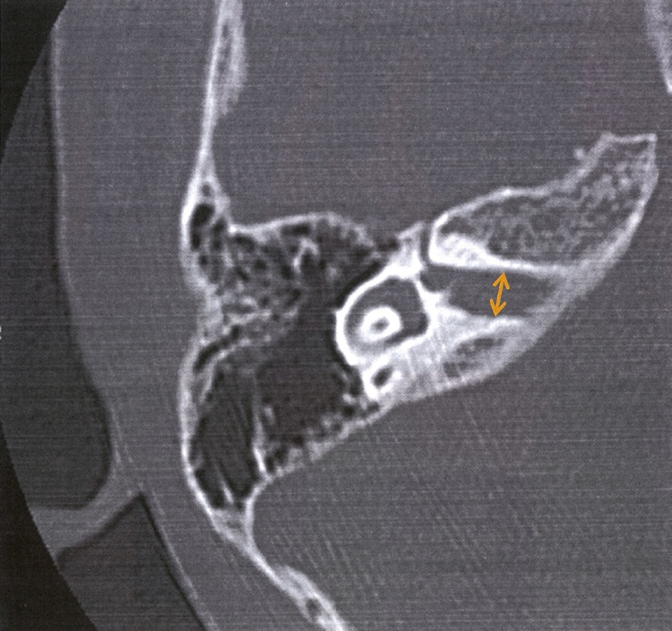
| 選択肢 | 解説 |
|---|---|
| ◯ ａ 前庭神経 | ◯ 内耳道を走る。上前庭神経（卵形囊・外側半規管・前半規管を支配）と下前庭神経（球形囊・後半規管を支配）に分かれ、いずれも内耳道内を通る。聴神経腫瘍（前庭神経鞘腫）の大半は上前庭神経から発生する。 |
| ◯ ｂ 顔面神経 | ◯ 内耳道を走る。顔面神経（Ⅶ）は中間神経とともに内耳道の前上区画を通り、内耳道底から顔面神経管（Fallopius管）へ入る。内耳道での配置は「7 up, coke down」＝上前が顔面（7）、下前が蝸牛（cochlea）。 |
| ｃ 鼓索神経 | 鼓索神経は顔面神経の枝だが、分岐するのは顔面神経管の乳突部（茎乳突孔の手前）で、そこから鼓室内に入りツチ骨柄とキヌタ骨長脚の間を横切る。内耳道より末梢の枝なので、内耳道内には存在しない。機能は舌前2/3の味覚と顎下腺・舌下腺の分泌。 |
| ◯ ｄ 蝸牛神経 | ◯ 内耳道を走る。ラセン神経節細胞の軸索が集まって内耳道の前下区画を通り、橋延髄移行部で蝸牛神経核に入る。この経路の障害が「後迷路性難聴」で、語音明瞭度の不釣り合いな低下とABRの波間潜時延長を示す。 |
| ｅ 大錐体神経 | 大錐体神経は膝神経節から分岐し、大錐体神経管を通って錐体尖上面へ出る。膝神経節は内耳道底より末梢（顔面神経管の第1膝）にあるので、内耳道内は走らない。機能は涙腺と鼻腺の分泌（副交感）で、ここより中枢の顔面神経麻痺では涙が出なくなる（Schirmer試験が局在診断に使える）。 |
| 症状 | 機序 |
|---|---|
| 一側性の緩徐進行性感音難聴・耳鳴（初発症状） | 蝸牛神経の圧迫・迷路動脈の血流障害 |
| 平衡障害（回転性めまいは少ない） | ゆっくり進むので中枢が代償する |
| 顔面の感覚低下・角膜反射消失（Ⅴ） | 腫瘍が小脳橋角部へ伸展 |
| 顔面神経麻痺は末期まで出にくい | 運動神経は緩徐な圧迫に強い |
| 選択肢 | 解説 |
|---|---|
| ａ 内耳炎 | 内耳（蝸牛）そのものの炎症による感音難聴。音を大きくしても、受け取る有毛細胞が壊れているので歪んだまま届く。補充現象と語音明瞭度の低下があり、増幅の効果は限定的である。 |
| ◯ ｂ 耳硬化症 | ◯ 純粋な伝音難聴なので補聴器の効果が最も大きい。アブミ骨底が卵円窓に骨性に固着して振動を内耳へ伝えられない状態で、内耳（蝸牛）そのものは正常＝骨導は保たれている。「届いていないだけ」なので、大きくして届ければそのまま聞こえる。 |
| ｃ 騒音性難聴 | 強大音による外有毛細胞の障害＝感音難聴。4000Hz付近に谷（C5 dip）を作り、進行すると高音域全体に広がる。補聴器は用いるが、伝音難聴ほどの明瞭な改善は得られない。 |
| ｄ 突発性難聴 | 急性発症の一側性感音難聴で、まず行うのはステロイドによる急性期治療であって補聴器ではない。対側の聴力が正常なら日常生活は保たれ、補聴器の適応にもなりにくい。 |
| ｅ ウイルス性難聴 | ムンプス難聴などのウイルス性内耳炎による感音難聴で、一側性の高度〜重度難聴（聾）となることが多く、残存聴力が乏しければ補聴器は役に立たない。 |
| 項目 | 内容 |
|---|---|
| 病態 | 卵円窓前方の骨迷路に生じた海綿状の新生骨がアブミ骨底を固着させ、振動が内耳へ伝わらなくなる |
| 疫学 | 20〜40歳代の女性に多い。両側性・進行性。妊娠で増悪する。白人に多く日本人には比較的少ない |
| 症状 | 緩徐進行性の伝音難聴、耳鳴。騒音下でかえって会話が聞き取りやすい（paracusis Willisii） |
| 鼓膜 | 正常（岬角の充血が透見されるSchwartze徴候が出ることがある） |
| 検査 | オージオグラムで気骨導差／2000Hzの骨導が見かけ上低下するCarhart notch／ティンパノメトリはA型（またはAs型）＝正常型なのに難聴／アブミ骨筋反射消失 |
| 治療 | アブミ骨手術（stapedotomy／stapedectomy＋ピストン挿入）または補聴器 |
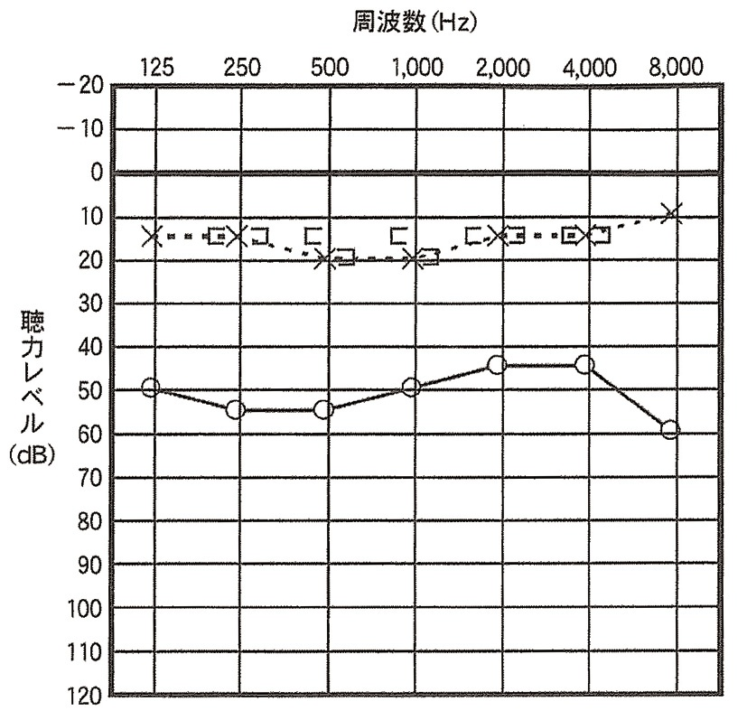
| 型 | 気導 | 骨導 | 気骨導差 | 障害部位 |
|---|---|---|---|---|
| 伝音難聴 | 低下 | 正常 | あり | 外耳・中耳（鼓膜・耳小骨・外耳道） |
| 感音難聴 | 低下 | 同程度に低下 | なし | 内耳（有毛細胞・血管条）・蝸牛神経・中枢 |
| 混合性難聴 | 低下 | 低下 | あり | 両方 |
| 選択肢 | 解説 |
|---|---|
| ◯ ａ 鼓 膜 | ◯ 鼓膜は外耳と中耳の境で、音を機械振動に変える伝音機構の入口である。穿孔・癒着・石灰化などで振動が伝わらなくなると、骨導は保たれたまま気導だけが落ちる＝本図の所見に一致する。 |
| ｂ 血管条 | 血管条〈stria vascularis〉は蝸牛管の外側壁にあり、K⁺を能動的に分泌して内リンパの高K⁺環境と蝸牛内電位（＋80mV）をつくる。障害されれば内耳性＝感音難聴となり、骨導も同じだけ低下するので気骨導差は生じない。 |
| ◯ ｃ 耳小骨 | ◯ ツチ骨・キヌタ骨・アブミ骨の連鎖が鼓膜の振動を卵円窓へ伝える。耳小骨連鎖離断（外傷後）や耳硬化症（アブミ骨固着）では典型的な伝音難聴となる。 |
| ｄ 蝸牛神経 | 蝸牛神経の障害は後迷路性難聴で、感音難聴に分類され気骨導差は出ない。語音明瞭度の不釣り合いな低下やABRの波間潜時延長が手がかりになる。 |
| ｅ 有毛細胞 | Corti器の有毛細胞（内・外）は音の機械刺激を電気信号へ変換する受容細胞で、障害されれば内耳性の感音難聴となる。騒音性難聴・薬剤性難聴・加齢性難聴の主座はここである。 |
| 型 | 代表疾患 |
|---|---|
| 伝音難聴 | 耳垢栓塞・外耳道閉鎖症・鼓膜穿孔・滲出性中耳炎・急性/慢性中耳炎・真珠腫性中耳炎・耳小骨連鎖離断・耳硬化症 |
| 感音難聴（内耳性） | 突発性難聴・Ménière病・騒音性難聴・加齢性難聴・薬剤性（アミノグリコシド、シスプラチン、ループ利尿薬）・ムンプス難聴 |
| 感音難聴（後迷路性） | 聴神経腫瘍・多発性硬化症・auditory neuropathy |
| 混合性難聴 | 進行した真珠腫性中耳炎、耳硬化症の進行例、側頭骨骨折 |
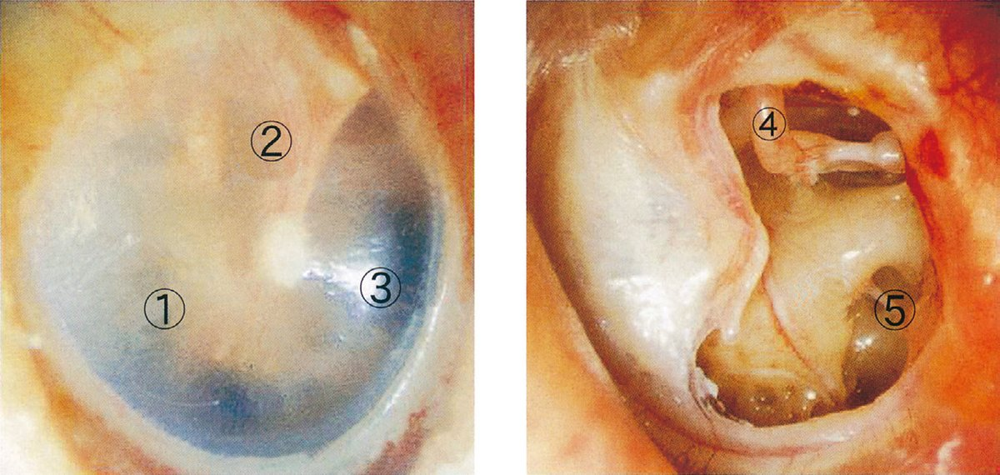
| 選択肢 | 解説 |
|---|---|
| ａ ① ―――――― 鼓膜弛緩部 | ①は緊張部の下方（前下象限）を指している。鼓膜弛緩部〈Shrapnell膜〉はツチ骨短突起より上方の、前後のツチ骨ヒダに挟まれた小さな領域であり位置が違う。 |
| ｂ ② ―――――― ツチ骨頭 | ツチ骨頭とキヌタ骨体は上鼓室〈epitympanum〉にあり、正常な鼓膜越しには透見できない。鼓膜を通して見えるツチ骨の部分は「ツチ骨柄」と「ツチ骨短突起」だけである。 |
| ◯ ｃ ③ ―――――― 光 錐 | ◯ ③は鼓膜臍から前下方へ扇形に伸びる光の反射＝光錐〈cone of light〉である。右耳では5時方向、左耳では7時方向に見えるのが正常で、鼓膜が膨隆・内陥すると消失・変形するため急性中耳炎や滲出性中耳炎の重要な所見になる。 |
| ◯ ｄ ④ ―――――― キヌタ骨長脚 | ◯ ④は穿孔越しに見える白い棒状の構造で、後上方から下方へ降りてアブミ骨に向かうキヌタ骨長脚である。慢性中耳炎ではこの長脚が炎症で吸収・断裂して耳小骨連鎖が離断し、難聴が増悪することが多い（鼓室形成術で再建する部位）。 |
| ｅ ⑤ ―――――― 前庭窓 | ⑤は穿孔の後下方に見える陥凹＝蝸牛窓〈正円窓〉窩である。前庭窓（卵円窓）はアブミ骨底とその輪状靱帯で塞がれており、より上後方に位置する——2つの窓の上下関係（前庭窓が上後方、蝸牛窓が下後方）は必ず押さえる。 |
| 所見 | 疾患 |
|---|---|
| 発赤・膨隆・光錐消失 | 急性中耳炎 |
| 琥珀色〜黄色・気泡や液面・内陥・可動性低下 | 滲出性中耳炎（ティンパノメトリB型） |
| 弛緩部の陥凹・痂皮・白色の角化物 | 真珠腫性中耳炎（弛緩部型） |
| 緊張部の中心性穿孔・間欠的な耳漏 | 慢性穿孔性（化膿性）中耳炎 |
| 白色の板状硬化 | 鼓膜石灰化（tympanosclerosis） |
| 鼓膜が岬角に張り付く | 癒着性中耳炎 |
| 青黒く透見 | 鼓室内の貯留血・グロムス腫瘍 |
| 選択肢 | 解説 |
|---|---|
| ａ 耳硬化症 | 純粋な伝音難聴で、補聴器の効果が最も高い疾患である。手術（アブミ骨手術）を望まない例や両側例で広く用いられる。 |
| ｂ 老人性難聴 | 両側性・対称性の高音漸傾型感音難聴で、薬物治療の手段がなく、補聴器こそが主たる治療である。難聴の放置は社会的孤立と認知症のリスク因子になるため、積極的な装用が推奨される。 |
| ◯ ｃ 機能性難聴 | ◯ 機能性難聴（心因性難聴・詐聴）は聴覚系に器質的な異常がない。他覚的検査（OAE・ABR・ASSR・アブミ骨筋反射）はすべて正常で、本当は聞こえている。補聴器を与えることは「難聴である」という誤った確認を本人と家族に与え、症状を固定・遷延させるので有害である。 |
| ｄ 慢性中耳炎 | 鼓膜穿孔と耳小骨障害による伝音難聴なので補聴器はよく効く。ただし耳漏が続く間は耳栓型の補聴器で外耳道を塞ぐと感染を悪化させるため、まず耳漏の制御と鼓室形成術を検討し、その上で装用するのが順序である。 |
| ｅ 乳幼児の高度難聴 | 言語習得前の高度難聴こそ、最も早期の補聴器装用が必要な状況である。6か月までの装用開始（1-3-6ルール）が言語発達の予後を決める。 |
| 補聴器 | 人工内耳 | |
|---|---|---|
| 原理 | 音を増幅して外耳道へ入れる | 蝸牛の鼓室階に電極を入れ、ラセン神経節細胞を直接電気刺激する |
| 前提 | 残存聴力（有毛細胞）があること | 蝸牛神経が存在すること |
| 適応 | 伝音難聴が最良。感音難聴でも中等度〜高度なら適応 | 両側高度〜重度感音難聴で補聴器の効果が不十分 |
| 年齢 | 制限なし（乳児から） | 小児は原則1歳以上 |
| 適応外 | 機能性難聴 | 蝸牛神経低形成・欠損（→聴性脳幹インプラント） |
| 選択肢 | 解説 |
|---|---|
| ａ 頭を動かすとめまいが悪化する。 | 頭位でめまいが増悪するのは良性発作性頭位めまい症〈BPPV〉の典型であり、末梢性めまい全般でもよくみられる非特異的な訴えである。これだけで緊急性は判断できない。 |
| ｂ 耳がつまった感じがする。 | 耳閉感は内耳（蝸牛）症状であり、Ménière病・突発性難聴・滲出性中耳炎などを示唆する。末梢性を支持する所見であって、中枢性の危険信号ではない。 |
| ◯ ｃ つばを飲み込みにくい。 | ◯ 嚥下障害＝球麻痺（延髄の疑核・舌咽/迷走神経）の症状である。めまいに嚥下障害が加われば、延髄外側の梗塞（Wallenberg症候群・PICA領域）をまず疑う。誤嚥性肺炎の危険もあり、即時の受診が必要である。 |
| ｄ 天井がぐるぐる回る。 | 回転性めまい〈vertigo〉そのものは、むしろ末梢前庭障害に多い。「激しく回る＝危険」ではないのがめまい診療の要点で、危険を決めるのはめまいの強さではなく随伴する神経症状である。 |
| ◯ ｅ しゃべりにくい。 | ◯ 構音障害は脳幹（延髄の疑核・舌下神経核）や小脳の病変を示す。めまい＋構音障害は椎骨脳底動脈系の虚血を強く示唆し、直ちに画像評価（MRI拡散強調像）へ進むべき組合せである。 |
| 項目 | 末梢性 | 中枢性（危険） |
|---|---|---|
| Head Impulse（頭部衝動試験） | 患側で陽性（矯正性サッカードが出る） | 陰性＝正常（サッカードが出ない） |
| Nystagmus | 方向固定性 | 注視方向交代性・垂直性 |
| Test of Skew（交代遮閉試験） | ずれなし | 垂直方向の眼位ずれあり |
| 波 | 発生源 | 脳幹か |
|---|---|---|
| Ⅰ | 蝸牛神経の遠位部（末梢端） | ✗ 末梢 |
| Ⅱ | 蝸牛神経近位部〜蝸牛神経核 | ◯ |
| Ⅲ | 蝸牛神経核〜上オリーブ核（橋下部） | ◯ |
| Ⅳ | 外側毛帯（橋上部） | ◯ |
| Ⅴ | 下丘（中脳） | ◯ |
| 選択肢 | 解説 |
|---|---|
| ◯ ａ Ⅰ 波 | ◯ Ⅰ波の発生源は蝸牛神経の遠位部（蝸牛内・末梢端）で、脳幹に入る前の末梢神経の活動電位である。したがってⅠ波だけが脳幹機能を反映しない。「Ⅰ波は残っているがⅡ波以降が消失」なら病変は脳幹側にあると読める。 |
| ｂ Ⅱ 波 | Ⅱ波は蝸牛神経の近位部（脳幹に入る部位）〜蝸牛神経核に由来する。ここから先は脳幹内の構造である。 |
| ｃ Ⅲ 波 | Ⅲ波は蝸牛神経核〜上オリーブ核（橋下部）に由来する。Ⅰ-Ⅲ波間潜時は「末梢から橋下部まで」の伝導時間を表す。 |
| ｄ Ⅳ 波 | Ⅳ波は外側毛帯（橋上部）に由来する。Ⅳ波とⅤ波は融合して記録されることが多い。 |
| ｅ Ⅴ 波 | Ⅴ波は下丘（中脳）に由来する。最も振幅が大きく再現性が高いため、閾値推定にはこのⅤ波が消える刺激レベルを用いる。 |
| 症状 | 責任病巣 |
|---|---|
| 同名半盲 | 視索・外側膝状体・視放線・後頭葉（＝視交叉より後方） |
| 両耳側半盲 | 視交叉（下垂体腺腫・頭蓋咽頭腫） |
| 四肢・体幹の失調、断綴性言語、注視方向性眼振 | 小脳 |
| 複視・嚥下障害・構音障害・交代性片麻痺 | 脳幹 |
| 一側性感音難聴＋語音明瞭度の解離 | 蝸牛神経（後迷路） |
| 頭位で誘発される数十秒のめまい | 半規管内の耳石（末梢） |
| 選択肢 | 解説 |
|---|---|
| ◯ ａ 小脳梗塞 ―――――――― 同名半盲 | ◯ これが「可能性が低い」組合せである。同名半盲は視交叉より後方（視索・外側膝状体・視放線・後頭葉）の病変で生じるが、小脳には視覚路が通っていない。小脳梗塞で出るのは回転性めまい・嘔吐・体幹/四肢失調・注視方向性眼振・断綴性言語であって、視野欠損ではない。 |
| ｂ 聴神経腫瘍 ―――――― 語音明瞭度低下 | むしろ聴神経腫瘍に特徴的な所見である。後迷路性難聴では純音聴力の低下に不釣り合いなほど語音明瞭度が悪く（明瞭度の解離）、音を大きくするとかえって明瞭度が下がるroll-over現象も出る。 |
| ｃ 突発性難聴 ―――――― 耳 鳴 | 突発性難聴では大多数の症例で耳鳴を伴う。「ある日突然、片耳が聞こえなくなり耳鳴がする」が典型的な訴えである。 |
| ｄ パニック障害 ――――― 動 悸 | パニック発作の中核症状。動悸・発汗・振戦・呼吸困難・胸痛・めまい・死の恐怖などが数分でピークに達する。 |
| ｅ 良性発作性頭位めまい症 ― 寝返り時のめまい | BPPVの典型的な訴えそのもの。寝返り・起き上がり・上を見るといった頭位変換で数十秒の回転性めまいが誘発され、じっとしていれば治まる。 |
| 所見 | 内耳性（Ménière病など） | 後迷路性（聴神経腫瘍など） |
|---|---|---|
| 補充現象 | 陽性（大きい音が響く） | 陰性 |
| 語音明瞭度 | 比較的保たれる | 不釣り合いに低い |
| roll-over現象 | なし | あり（音を上げると明瞭度が下がる） |
| ABR | 正常 | Ⅰ-Ⅴ波間潜時延長・左右差 |
| 自記オージオメトリ | Jerger Ⅱ型 | Jerger Ⅲ・Ⅳ型 |
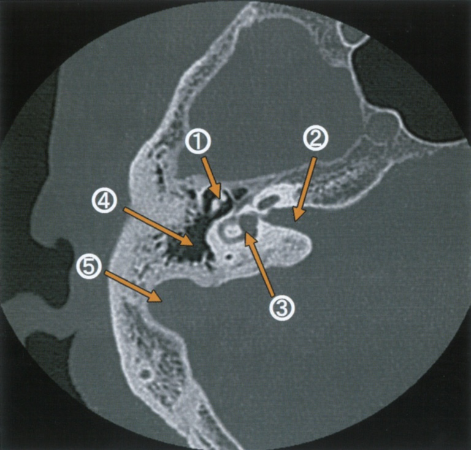
| 選択肢 | 解説 |
|---|---|
| ａ ① ― 舌知覚 | ①は上鼓室内の耳小骨（ツチ骨頭・キヌタ骨体）を指しており、音の機械的伝達を担う構造で神経ではない。なお舌の一般知覚（触・痛・温度）は三叉神経第3枝の舌神経が担い、中耳を横切る鼓索神経が担うのは舌前2/3の「味覚」——いずれにせよ組合せとして誤りである。 |
| ｂ ② ― 中耳腔換気 | ②は内耳道で、顔面神経（Ⅶ）と内耳神経（Ⅷ）が通る神経の通路である。中耳腔の換気を担うのは耳管（中耳と上咽頭を結ぶ管）であり、この断面ではより前方・下方を走る別構造である。 |
| ◯ ｃ ③ ― 平衡覚 | ◯ ③は内耳の前庭〈vestibule〉を指す。すぐ外側に見える中心に輝点をもつ輪状構造が蝸牛（輝点＝蝸牛軸）で、その後内側に続く袋状の腔が前庭である。前庭には耳石器（卵形囊・球形囊）が入り、半規管とともに平衡覚を担う。 |
| ｄ ④ ― 表情筋運動 | ④は乳突蜂巣（含気腔）で、中耳腔に連続する空気の入った骨の小部屋の集まりである。表情筋を支配するのは顔面神経で、側頭骨内では顔面神経管（Fallopius管）を走る——含気腔とはまったく別の構造である。 |
| ｅ ⑤ ― 聴 覚 | ⑤は骨部外耳道で、音を鼓膜まで導く通路にすぎない。音を受容して神経信号に変えるのは蝸牛（Corti器の有毛細胞）であり、「聴覚」を担う構造としてはそちらが正しい。 |
| 構造 | 受容器 | 感じるもの | 神経 |
|---|---|---|---|
| 蝸牛 | Corti器の有毛細胞 | 音 | 蝸牛神経 |
| 卵形囊（前庭内） | 平衡斑＋耳石 | 水平方向の直線加速度 | 上前庭神経 |
| 球形囊（前庭内） | 平衡斑＋耳石 | 垂直方向の直線加速度・重力 | 下前庭神経 |
| 半規管（3本） | 膨大部稜のクプラ | 回転（角）加速度 | 上前庭神経（前・外側）／下前庭神経（後） |
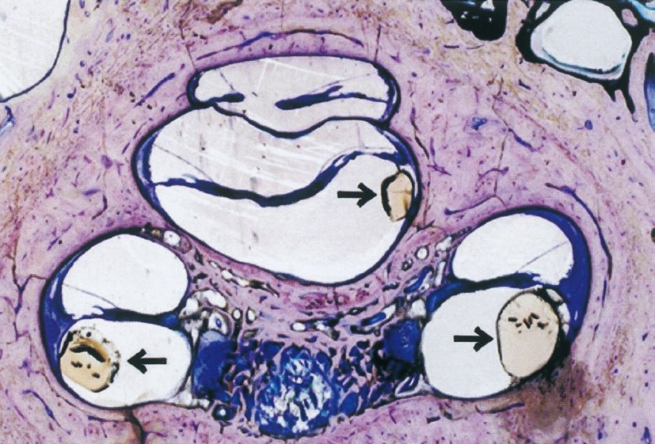
| 選択肢 | 解説 |
|---|---|
| ａ 前 庭 | 前庭は耳石器（卵形囊・球形囊）を容れる平衡覚の腔である。ここに電極を入れても聴覚は得られず、めまいを起こすだけである。 |
| ◯ ｂ 蝸 牛 | ◯ 電極アレイは蝸牛の鼓室階に挿入する。基底回転から頂回転へ向かって進め、蝸牛軸のラセン神経節細胞を直接電気刺激することで聴覚を生じさせる。蝸牛の周波数局在（tonotopy：基底＝高音、頂＝低音）に沿って電極が並ぶので、周波数情報も伝えられる。 |
| ｃ 半規管 | 半規管は回転（角）加速度を感じる平衡器官で、聴覚とは無関係である。（なお高度の前庭障害に対する「人工前庭」は研究段階の別デバイス）。 |
| ｄ 内耳道 | 内耳道は顔面神経・蝸牛神経・前庭神経が通る骨性の管で、ここに電極を留置する術式ではない。蝸牛神経が欠損・低形成で人工内耳が使えない症例では、蝸牛神経核に電極を置く聴性脳幹インプラント〈ABI〉が選択される。 |
| ｅ 内リンパ囊 | 内リンパ囊は内リンパを吸収する袋で、錐体後面の硬膜下にある。Ménière病に対する内リンパ囊開放術の対象部位であって、人工内耳とは無関係である。 |
| 項目 | 内容 |
|---|---|
| 適応（成人） | 両側高度〜重度感音難聴で、補聴器装用下の語音明瞭度が不十分 |
| 適応（小児） | 原則1歳以上・体重8kg以上。補聴器装用と療育を経て効果不十分と判断。言語習得前難聴では早いほど言語予後が良い |
| 禁忌・慎重 | 蝸牛神経の欠損・低形成、蝸牛の高度骨化（髄膜炎後）、活動性中耳炎 |
| 合併症 | 顔面神経麻痺（顔面神経管の近くを削る）、髄膜炎、めまい、味覚障害（鼓索神経）、機器の故障 |
| 周術期 | 術前に肺炎球菌ワクチン（髄膜炎リスクが一般より高い）。MRIは機種により制限あり |
| 術後 | 数週後に音入れ（マッピング）→ 継続的な調整と聴覚言語リハビリ |
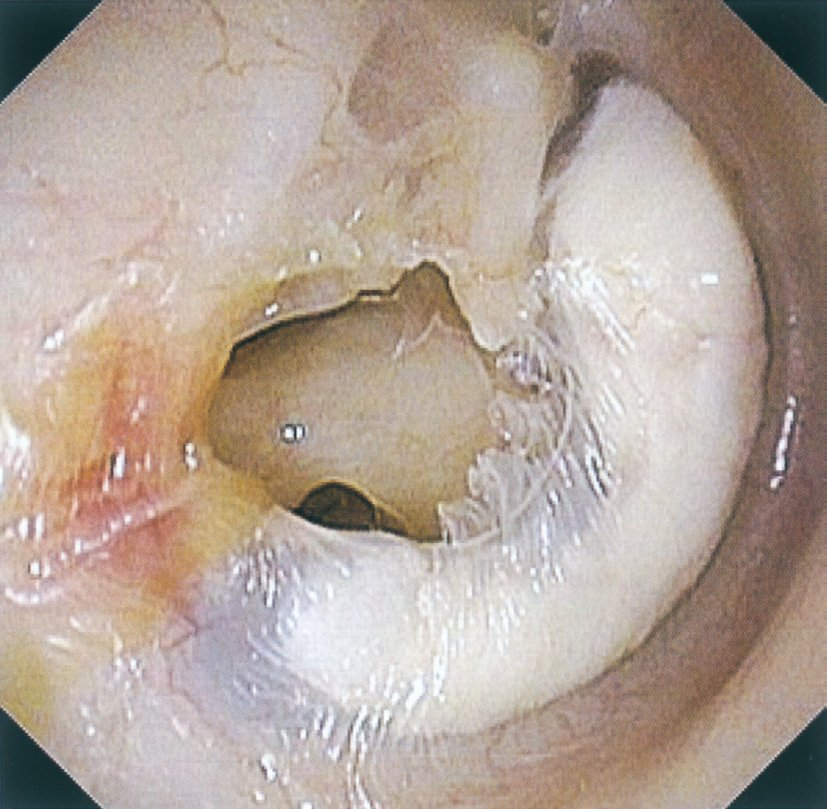
| 選択肢 | 解説 |
|---|---|
| ａ ツチ骨 | ツチ骨柄が穿孔の縁に沿って視認できる。ツチ骨柄と短突起は正常鼓膜でも透見できる代表的な指標で、穿孔があればその辺縁の位置関係からより明瞭になる。 |
| ｂ アブミ骨 | 大きな穿孔があると、後上象限の奥にキヌタ・アブミ関節やアブミ骨（の一部）が透見できることがある。本例のような広い緊張部穿孔では鼓室内が広く露出しており、視認しうる。 |
| ｃ 鼓膜穿孔 | 写真中央の大きな欠損がまさに鼓膜穿孔である。慢性穿孔性（化膿性）中耳炎の本態で、ここから鼓室内の岬角が透見されている。 |
| ◯ ｄ 耳管開口部 | ◯ 耳管の鼓室側の開口部（耳管鼓室口）は鼓室の前壁にあり、外耳道からの視軸に対して死角になる。穿孔がどれほど大きくても、鼓膜面の外側から覗いて直接見ることはできない。耳管の開口部を実際に観察するのは、上咽頭側の耳管咽頭口を内視鏡で見るときである。 |
| ｅ 鼓膜石灰化 | 穿孔の周囲に広がる白色の板状の硬化が鼓膜石灰化〈tympanosclerosis〉である。慢性の炎症で鼓膜固有層にカルシウムが沈着したもので、慢性中耳炎ではよくみられる。 |
| 慢性穿孔性（化膿性）中耳炎 | 真珠腫性中耳炎 | |
|---|---|---|
| 穿孔の場所 | 緊張部の中心性穿孔 | 弛緩部の陥凹／緊張部後上方の辺縁性穿孔 |
| 内容 | 肉芽・膿 | 角化物（ケラチン）の蓄積 |
| 骨破壊 | 乏しい | あり（耳小骨・骨迷路・顔面神経管を溶かす） |
| 耳漏 | 間欠的・粘液膿性 | 持続的・悪臭を伴う少量の耳漏 |
| 合併症 | 伝音難聴 | 顔面神経麻痺、迷路瘻孔（めまい）、S状静脈洞血栓症、髄膜炎、脳膿瘍 |
| 手術 | 鼓室形成術（穿孔閉鎖＋耳小骨連鎖再建） | 乳突削開術＋鼓室形成術（病巣を完全に取り切る） |
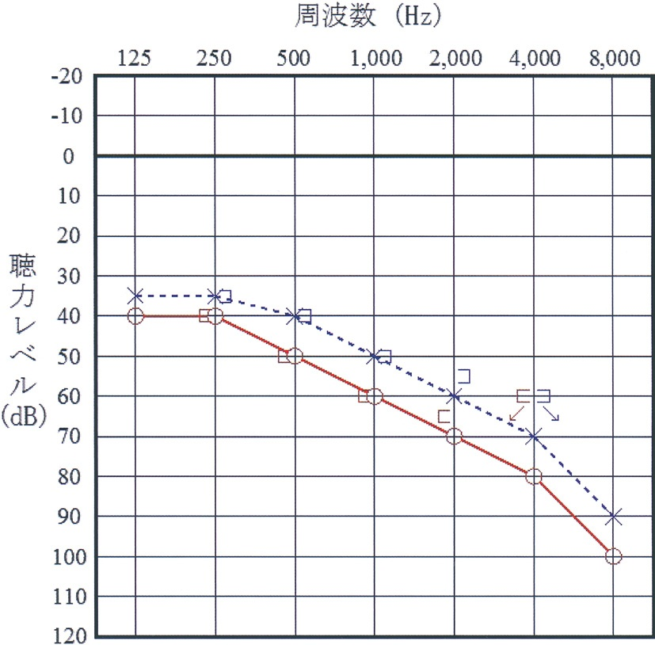
| 方法 | 式（a＝500Hz, b＝1000Hz, c＝2000Hz, d＝4000Hz） | 用途 |
|---|---|---|
| 4分法 | (a ＋ 2b ＋ c) / 4 | 日本聴覚医学会の標準。日常臨床で最も使う |
| 3分法 | (a ＋ b ＋ c) / 3 | 簡便法 |
| 6分法 | (a ＋ 2b ＋ 2c ＋ d) / 6 | 身体障害者手帳・労災（高音域を重く見る） |
| 選択肢 | 解説 |
|---|---|
| ａ （40 ＋50 ＋50 ＋60）／4 ＝50dB | これは「左耳」の4分法である。左気導（×・青・破線）は500Hz＝40dB、1000Hz＝50dB、2000Hz＝60dBなので(40＋50×2＋60)/4＝50dBとなる。左右を取り違えた受験生が最も多く選んだ肢で、本問の正答率が9%まで落ちた最大の原因である。 |
| ｂ （40 ＋50 ＋60 ＋70）／4 ＝55dB | 左耳の500Hz（40dB）から右耳の値を混ぜた形で、どちらの耳の4分法にもならない。 |
| ◯ ｃ （50 ＋60 ＋60 ＋70）／4 ＝60dB | ◯ 右気導（○・赤・実線）は500Hz＝50dB、1000Hz＝60dB、2000Hz＝70dB。4分法は1000Hzを2倍に重み付けするので(50＋60＋60＋70)/4＝240/4＝60dBとなる。式の中に60が2つ並んでいるのが「1000Hzを2回足している」印である。 |
| ｄ （50 ＋60 ＋70 ＋80）／4 ＝65dB | 500・1000・2000・4000Hzを1回ずつ足した形で、1000Hzの重み付けをせず4000Hzを含めてしまっている。4分法の定義に反する。 |
| ｅ （50 ＋50 ＋60 ＋70）／4 ＝57.5dB | 計算自体は正しい（230/4＝57.5）が、足している値の組合せが誤り。右耳の1000Hzは60dBであって50dBではないので、重み付けすべき値そのものを取り違えている。どちらの耳の4分法とも一致しない。 |
| 記号 | 意味 | 線 |
|---|---|---|
| ○（赤） | 右気導 | 実線 |
| ×（青） | 左気導 | 破線 |
| ⊏ | 右骨導 | 線で結ばない |
| ⊐ | 左骨導 | 線で結ばない |
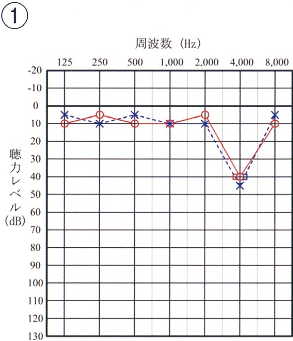
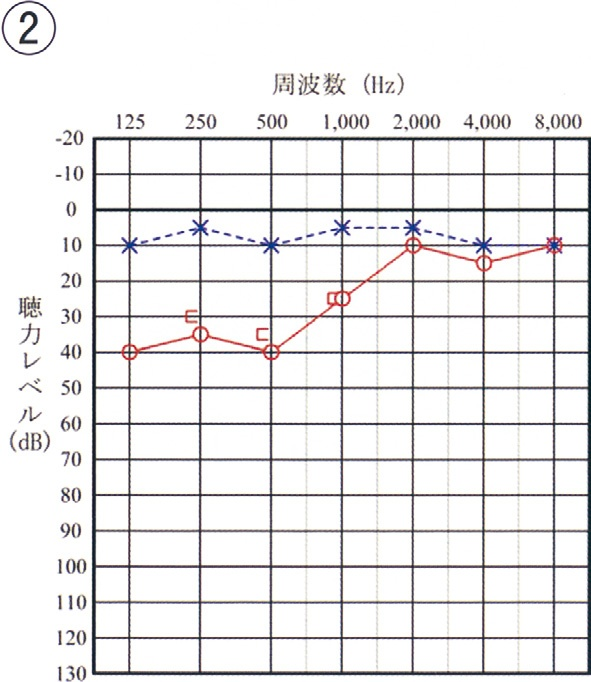
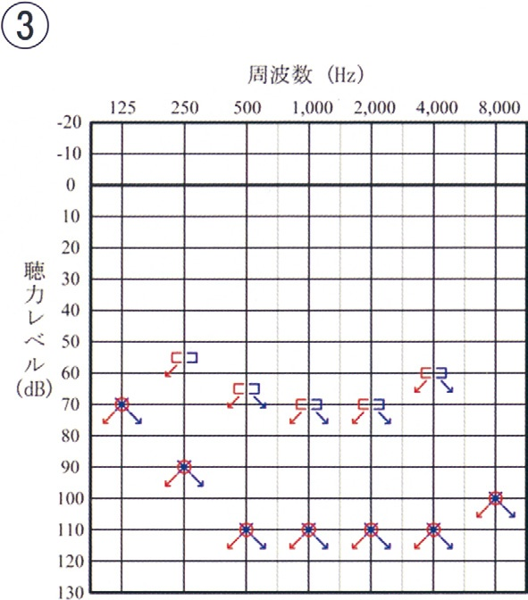
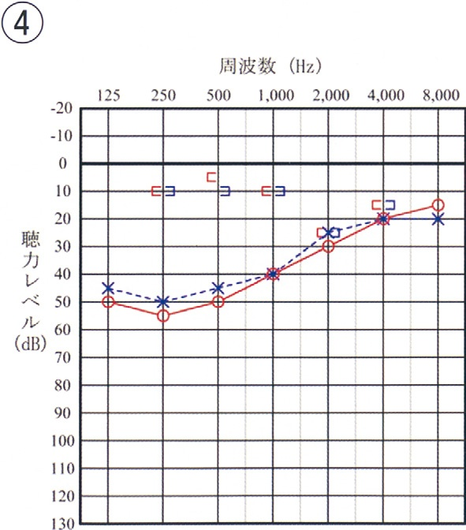
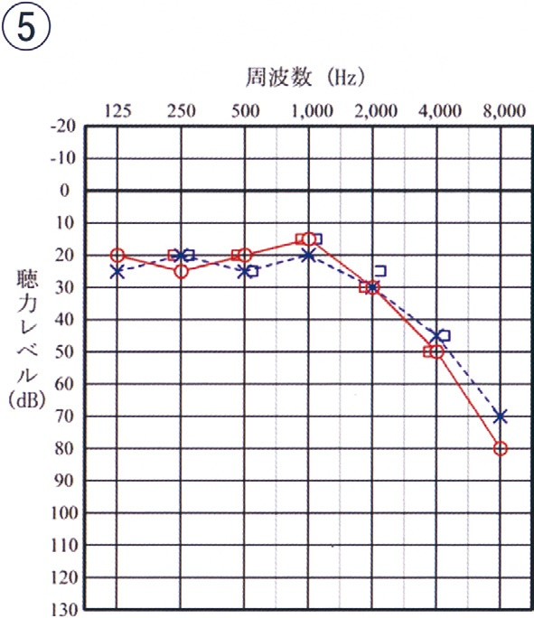
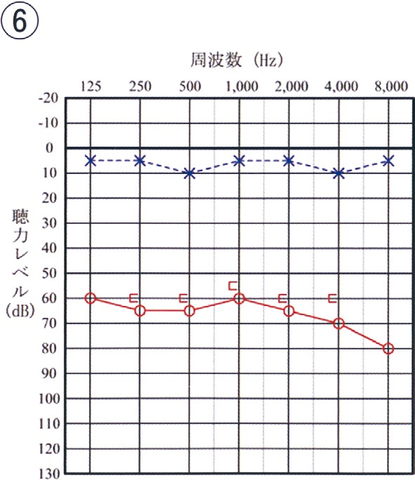
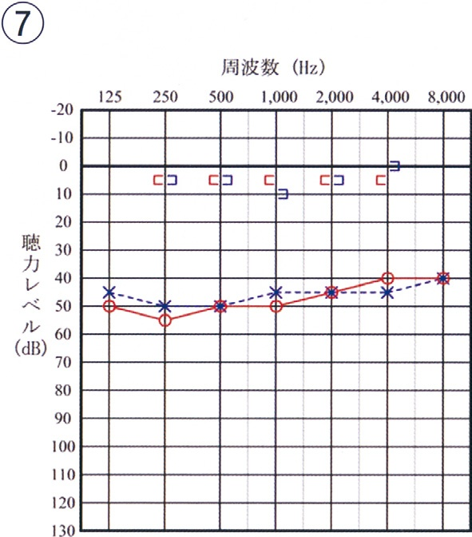
| 選択肢 | 解説 |
|---|---|
| ａ ① | 気導・骨導とも全周波数でほぼ正常域だが、4000Hzにだけ両耳とも40〜45dBの深い谷（ノッチ）がある。これはC5 dip＝騒音性難聴（音響外傷）の特徴で、気骨導差がないので感音難聴である。 |
| ｂ ② | 左（×）は正常。右（○）は低音部が40dBと悪く高音部で改善する上昇型で、右骨導も気導に重なっており気骨導差がない。＝一側性の低音障害型感音難聴で、Ménière病や急性低音障害型感音難聴の型である。 |
| ｃ ③ | 気導・骨導とも両耳で70〜110dB以上へ落ち、多くの周波数でスケールアウト（矢印）となっている。＝両側の高度〜重度感音難聴（先天性難聴など）で、人工内耳の適応を検討する水準である。 |
| ｄ ④ | 骨導は全周波数で正常だが、気導は低音部で50〜55dBと悪く高音部（4000〜8000Hz）では15〜20dBまで改善する——気骨導差が低音部に偏った「上昇型の伝音難聴」である。滲出性中耳炎や耳硬化症の初期にみられる型で、全周波数に均等な差が出る外耳道閉鎖症とは形が違う。 |
| ｅ ⑤ | 1000Hzまでは両耳とも15〜25dBとほぼ正常だが、2000Hzから急激に落ちて8000Hzでは70〜80dBになる。＝高音急墜型の感音難聴（加齢性難聴・騒音性難聴の進行例）で、気骨導差はない。 |
| ｆ ⑥ | 左（×）は全周波数で正常。右（○）は気導60〜80dBで、右骨導もほぼ同じ高さに重なっている。＝一側性の中等度〜高度感音難聴（突発性難聴・聴神経腫瘍など）で、気骨導差がないので伝音難聴ではない。 |
| ◯ ｇ ⑦ | ◯ 骨導は全周波数で0〜5dBと完全に正常。気導は両耳とも40〜55dBで、周波数によらずほぼ平坦。＝全周波数にわたり40〜50dBのほぼ均等な気骨導差をもつ純粋な伝音難聴で、「伝音機構が丸ごと欠けている」外耳道閉鎖症の型に一致する。 |
| 対応 | 内容 |
|---|---|
| 骨導補聴器 | 乳幼児期からヘッドバンド型で装用できる。外耳道が無くても頭蓋骨を介して内耳に音を届けられる |
| 埋込型骨導デバイス | 成長後に骨固定型補聴器などを検討 |
| 外耳道形成術・鼓室形成術 | 中耳の発育が良好な症例に限って検討。術後の再狭窄が課題 |
| 耳介形成術 | 小耳症に対し、通常は学童期以降（肋軟骨が採取できる年齢） |
| 選択肢 | 解説 |
|---|---|
| ａ 音叉検査 | Rinne試験・Weber試験は「どちらが大きく聞こえるか」の比較を求める検査で、3歳児に安定した比較判断を期待するのは難しい。また伝音／感音の大まかな切り分けはできても閾値は分からない。 |
| ｂ 純音聴力検査 | 「音が聞こえたらボタンを押す」という約束を守り続けられるのはおおむね5〜6歳以上である。3歳では集中が続かず閾値が不正確になる。 |
| ◯ ｃ 遊戯聴力検査 | ◯ 3〜5歳の標準的な聴力検査である。「音が聞こえたら積木を箱に入れる／ペグを差す」といった遊びの形にすることで、幼児でも純音聴力検査と同等の周波数別の閾値が得られる。鼓膜も身体所見も正常な3歳児で、まず選ぶべき精密検査はこれである。 |
| ｄ 語音聴力検査 | 単音節語表の復唱や書き取りを求める検査で、語彙と読み書きが十分でない3歳児では成立しない。補聴器・人工内耳の効果判定に用いる検査であり、難聴の一次精査でもない。 |
| ｅ 自記オージオメトリ | 被検者自身がボタンを押し続け／離して閾値を連続記録する成人向けの検査。3歳児には施行不能である。 |
| 領域 | 見るもの | 見逃すと |
|---|---|---|
| 聴覚 | 問診票（ささやき声への反応など）＋必要に応じ精密検査 | 言語発達の遅れ |
| 視覚 | 視力検査・斜視の有無 | 弱視（感受性期を過ぎると治らない） |
| 言語・発達 | 二語文・三語文、対人的なやりとり | 発達障害の発見の遅れ |
| 身体・う歯 | 成長曲線、齲歯、股関節 | — |